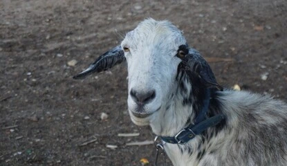

Privacy Policy
Last updated: June 20261. Who we are
Saint Francis Rescue and Sanctuary of Yuma (“we,” “our,” “us”) is a registered 501(c)(3) nonprofit (EIN 99-0599742) based in Yuma, Arizona, with a mailing address of PO Box 25413, Yuma, AZ 85367. We are 100% volunteer-run and prefer contact through our contact form or Facebook page for all non-emergency matters.
2. What information we collect
We collect information you voluntarily provide when you:
- Submit an adoption, foster, volunteer, or general inquiry through our contact form
- Reach out to us through Facebook or Instagram
- Make a donation through a third-party platform (such as Zeffy)
This may include your name, email address, and any details you choose to share about your household, your experience, or the animal you're interested in. We only ask for what we need to respond to you.
3. How we use your information
We use the information you provide solely to respond to and process your inquiry, coordinate adoptions, fosters, and volunteering, and follow up about an animal's placement. We do not sell, rent, or trade your personal information to anyone.
4. Third-party services
Contact form submissions are delivered to us by a form-handling service. Donations are processed entirely by third-party platforms with their own privacy policies. We never see or store your full payment details. Our website is hosted on Cloudflare Pages.
5. Data retention
We keep inquiry and adoption records only as long as needed to operate the rescue and meet any legal or recordkeeping obligations, then dispose of them responsibly.
6. Your rights
You may ask us what information we hold about you, request a correction, or ask us to delete it. Contact us through our contact form or Facebook page and we'll take care of it.
7. Children's privacy
Our website is not directed at children under 13, and we do not knowingly collect personal information from them.
8. Security
We take reasonable measures to protect the information you share with us. No method of transmission over the internet is completely secure, but we work to keep your data safe.
9. Changes to this policy
We may update this policy from time to time. The “last updated” date above reflects the most recent revision.
10. Contact us
Questions about your privacy? Reach us through our contact form or Facebook page, or by mail at PO Box 25413, Yuma, AZ 85367.